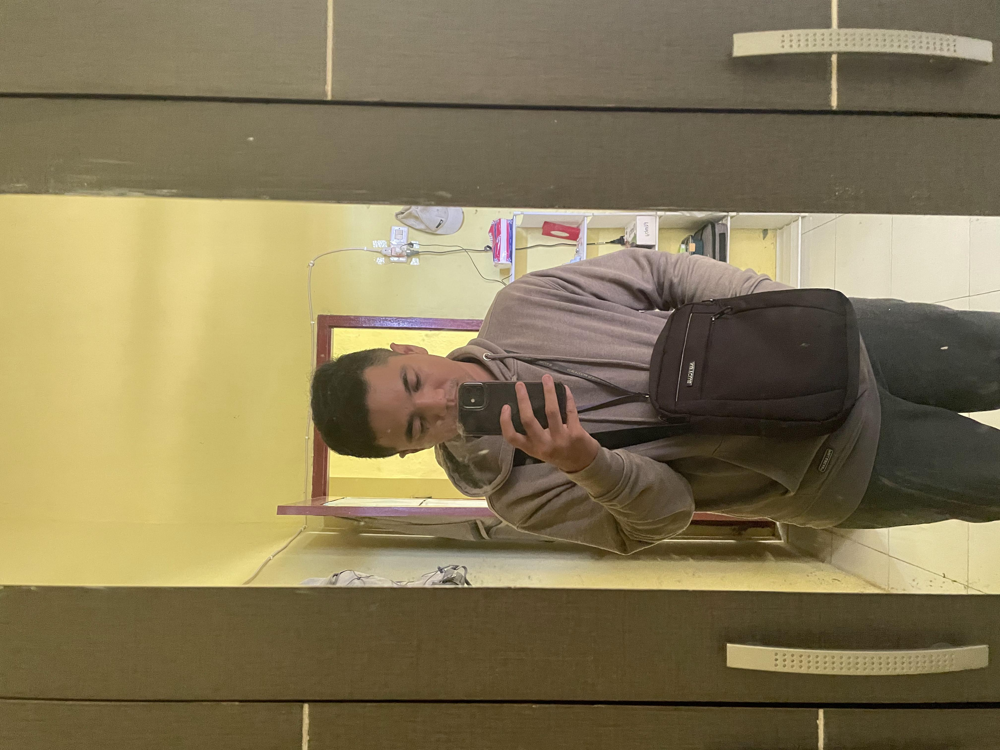

Muhammad Surya Lesmana

Summary
I'm very lucky to have girlfriend who is perfect
Education
- Matematika dan Ilmu-ilmu Alam - SMA Negeri 1 Garawangi (2014-2016)
Work Experience
-
Sales Promotion Boy - Yogya Toserba Cijoho, Kuningan
Mei 2016 - Juni 2016
- memperkenalkan konsumen pada produk perusahaan
- membuat konsumen tertarik untuk membeli produk tersebut
-
Pramuniaga - Indomaret RE. Martadinata, Kuningan
Januari 2019 - Maret 2019
- Menata produk di ra
- Mendata produk
- Menjaga kebersihan
- Mengemas produk/hadiah
- Membuat laporan
- Memberikan label harga
- Memberikan pelayanan
- Mencapai target penjualan
- Memberikan promosi
- Peka dan tanggap
-
GrabBikeDriver - Grab, Cirebon
Maret 2019 - September 2019
- mengantar penumpang yang melakukan pemesanan melalui aplikasi Grab
- mengambil pesanan melalui aplikasi
- menjemput penumpang di lokasi yang ditentukan
-
Kasir - Pizza Hut Delivery, Purwokerto
Desember 2019
- menyapa setiap pelanggan dengan positif
- memasukkan barang pembelian ke dalam mesin kasir untuk dihitung total pembeliannya
- menyebut total pembelian secara jelas
- menerima pembayaran baik tunai, cek, kredit, debit atau voucher
- memperbaiki perbedaan harga
-
Server - District Club and KTV, Purwokerto
Januari 2020
- menerima pesanan
- mengantarkan makanan dan minuman
- menjaga kebersihan dan keteraturan ruangan, memberikan rekomendasi
- bersikap ramah dan profesional dalam setiap interaksi dengan pelanggan
-
Content Writer - Freelance, Purwokerto
Januari 2020 - Maret 2020
- Membuat, mengelola, dan mendistribusikan konten
- Melakukan riset
- Mengenal SEO
- Memiliki kemampuan editorial
- Membuat panduan gaya penulisan
- Mengukur hasil performa konten
- Berkolaborasi dengan beberapa pihak
-
Pengawal Truk - PT. Jagat Bumi Khatulistiwa, Tangerang
Maret 2021
- Mengawasi operasional dari awal sampai akhir
-
Pegawai Negeri Sipil - Kementerian Perhubungan
Januari 2022 - Sekarang
- perencana, pelaksana, dan pengawas penyelenggaraan tugas umum pemerintahan dan pembangunan nasional melalui pelaksanaan kebijakan dan pelayanan publik yang profesional, bebas dari intervensi politik, serta bersih dari praktik korupsi, kolusi, dan nepotisme
Skills
- Customer service: ⭐️⭐️⭐️⭐️⭐️
- Microsoft Office Suite: ⭐️⭐️⭐️⭐️
- Organization skills: ⭐️⭐️⭐️⭐️
Awards and Certifications
- Peserta Terbaik UN SD tingkat sekolah (2010)
- Peringkat 9 Paralel se-SMPN 1 Cigombong selama pendidikan (2013)
- Peserta Terbaik UN SMA tingkat sekolah (2016)
- EFSET Certifications (2021)
- Pemkabar (2022)
- Latsar CPNS (2022)
- Safety Management System (2023)
Others